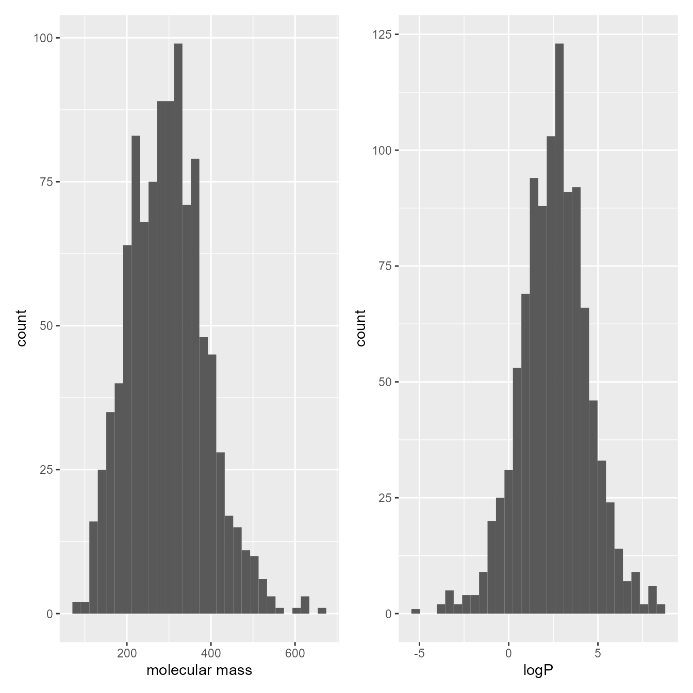

We used a publicly available dataset that comprises the measurements of RP-HPLC retention times collected for 1026 analytes. The retention times were measured under isocratic conditions on Eclipse Plus C18 (Agilent) stationary phase with 3.5 μm particles. The experiments were conducted using a mixture of two solvents: solvent A, which was made of 0.1% formic acid in water, and solvent B, which was made of 0.1% formic acid in acetonitrile. The column temperature was set at 35^{}C. The data were collected by Boswell et al. and were used to create a method to predict retention time by Back-Calculating the Gradient.
Code
#' R version needs to be higher to run Rxnsim (will fix later)#' Rxnsim packagesmiles <-read.csv("../data/smiles1026_kekulized.smi", sep ="\t", header =FALSE)simMat <-ms.compute.sim.matrix(smiles$V1)write.csv(simMat,'../data/similarity-matrix.csv')
Code
# load datadata <-read.csv("../data/database_logk_1026.csv", header =TRUE)analytes_names <-read.csv("../data/database_logk_1026_analyte_names.csv", header =TRUE)smiles <-read.csv("../data/smiles1026_kekulized.smi", sep ="\t", header =FALSE)#' obtained using Rxnsim packagesimMat <-read.csv("../data/similarity-matrix-ltri.csv")%>%select(-X)rownames(simMat)<-colnames(simMat)makeSymm <-function(m) { m[upper.tri(m)] <-t(m)[upper.tri(m)]return(m)}simMat <-makeSymm(simMat)data<-data %>%left_join(analytes_names) %>%mutate(mm_group =case_when( MW_ACD <200~"MM < 200", MW_ACD <300& MW_ACD >=200~"200 \u2264 MM < 300", MW_ACD <400& MW_ACD >=300~"300 \u2264 MM < 400",.default ="400 \u2264 MM"))functional_groups =read.csv('../data/checkmol_functional_groups.csv')functional_groups_names =read.csv('../data/checkmol_functional_group_names.csv')# combine nr of caroboxylic acid and carboxyalic acid salt functional groups# heterocyclic compounds with more than 6 heterocycles are treated as if they have sixfunctional_groups[,76]=functional_groups[,76]+functional_groups[,77] functional_groups[which(functional_groups[,202]>5.5),202] =6; # exclude some functional groupsidx_excluded <-c(1, 2, 3, 6, 27, 28, 37, 47, 48, 51, 55, 61, 62, 67, 73, 74, 75, 77, 80, 91, 99, 109, 116, 117, 121, 125, 129, 142, 153, 154, 160, 161, 168, 173, 178, 181, 182, 186, 187, 191, 196, 201, 202)functional_groups_names <- functional_groups_names[-idx_excluded,]functional_groups <- functional_groups[,-idx_excluded]rm(idx_included)totalnrgroups <-summarise_each(functional_groups, funs(sum))# remove functional groups not present in the dataset:functional_groups <- functional_groups[,which(totalnrgroups!=0)]functional_groups_names<- functional_groups_names[which(totalnrgroups!=0),]totalnrgroups <-summarise_each(functional_groups, funs(sum))nK <-ncol(functional_groups)data_ACD =read.csv('../data/ACD_pKas.csv')data_ACD$R =rowSums(data_ACD[,3:5]<14) # No of dissociation steps
Exploratory data analysis
During the exploratory data analysis phase, we create a series of plots to better understand our data.
Code
distance =-2*log(simMat)x<-hclust(as.dist(distance), method ="complete", members =NULL)plot(x)
The pH value of the mobile phase was verified experimentally for the purpose of this work. It equaled 2.66 with a standard deviation of 0.19 for the range of acetonitrile contents from 5 to 95%.
Code
data_pH <-read.csv("../data/pH.csv",header =TRUE)ggplot(data=data_pH, aes(x=fi, y=pH)) +labs(x ="\u03C6", y ="pH") +geom_point() +geom_hline(yintercept=mean(data_pH$pH), color ="red") +geom_hline(yintercept=mean(data_pH$pH)-sd(data_pH$pH), linetype="dashed", color ="red") +geom_hline(yintercept=mean(data_pH$pH)+sd(data_pH$pH), linetype="dashed", color ="red") +ylim(c(2.0,3.5))
The values of molecular mass MM were added to the dataset. They were calculated using ACD/Labs program based on the provided structures of analytes. The MM ranged from 73.09 to 656.8.
Code
df <- data %>%distinct(ID, .keep_all =TRUE) p1<-ggplot(data=df)+geom_histogram(aes(x=MW_ACD))+xlab("molecular mass")+ylab("count")p2<-ggplot(data=df)+geom_histogram(aes(x=logP_ACD))+xlab("logP")+ylab("count")p1+p2

The functional groups present in the analyzed chemical compounds are presented below, along with their frequencies
#' similarity matrix can be considered as a distance matrix.#' select analytes with similarity index < 0.5#' K_no_diag <- simMatdiag(K_no_diag)<-0maxes =apply(K_no_diag,2,max)ggplot(data.frame(x=1:1026, y=maxes), aes(x=x,y=y)) +geom_point() +geom_hline(yintercept =0.6, color="red")
Multilevel modeling was performed in Stan software linked with R/ cmdstanr. For the inference we used 500 iterations, 1000 warmup iterations, and 8 Markov chains. The reduce_sum function was selected to accelerate the calculations. It works by parallelizing the execution of a single Stan chain across multiple cores. Convergence diagnostics were checked using Gelman−Rubin statistics and trace plots.
Initialize variables and parameters
Code
# create Stan data set:datastruct <-with(data,list(nAnalytes=length(unique(data$ID)),nAnalytes_corr=length(idx_corelatted),nAnalytes_uncorr=length(idx_uncorelatted),idx_corr = idx_corelatted,idx_uncorr = idx_uncorelatted,nObs=length(data$ID),analyte=match(data$ID, unique(data$ID)),fi=data$fi,logPobs=logPobs, maxR=max(R),R=R,nGroupsA=nGroupsA,nGroupsB=nGroupsB,pKaslitA=pKaslitA,pKaslitB=pKaslitB,idxGroupsA=idxGroupsA,idxGroupsB=idxGroupsB,logkobs=data$logk,nK = nK,fgrp = functional_groups,nA0 = nA0,nB0 = nB0,idxA0 = idxA0,idxB0 = idxB0,simmat = simMat_adj[idx_corelatted,idx_corelatted],run_estimation=1))# initialize the values for each variable in each chain:init <-function(){list( logkwHat =rnorm(1,4,2),S1Hat =rnorm(1,4,1),dlogkwHat =rnorm(1,-1,0.125),dS1Hat =rnorm(1,0,0.25),S2Hat =2*exp(rnorm(1,0,0.125)),beta =rnorm(2,c(0.7,0.5),c(0.125,0.5)),omega =c(1,1)*exp(rnorm(2, 0, 0.25)),rhoc =t(chol(matrix(c(1,0.75,0.75,1), nrow=2))),alpha=0.8,eta =cbind((init_aprox$logkw-mean(init_aprox$logkw))/sd(init_aprox$logkw), (init_aprox$S1-mean(init_aprox$S1))/sd(init_aprox$S1)), #matrix(rep(0,nAnalytes*2), nrow=nAnalytes),pilogkw =rep(0,nK),piS1 =rep(0,nK),sdpi =c(0.1,0.1)*exp(rnorm(2,0,0.1)),sigma =0.05*exp(rnorm(1, 0, 0.5)) )}
Fitting the model
We compiled the model using cmdstanr:
Code
mod <-cmdstan_model(paste0(model_dir,".stan"), stanc_options =list("O1"))
Individual parameter are the analyte-specific parameters estimated by the model. The following plots allow to assess the correlations between these parameters.